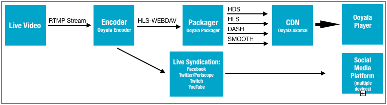

Ooyala Live supports syndication of live video to
several social media video platforms.
Ooyala Live now allows syndication to these
social media. You can syndicate live video without the need to enable or create
syndication rules. You can syndicate to 24x7 or ad-hoc channels.
Live Syndication Considerations
Live Syndication Workflow
